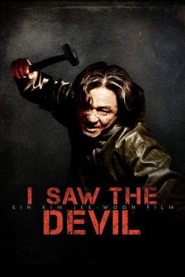

#8713 I Saw the Devil
 
 IMDB-Wertung: 7.8 / 10
IMDB-Wertung: 7.8 / 10  Metascore: 0
Metascore: 0 
Kyung-chul ist ein gefährlicher Serienmörder, dem die Polizei schon lange auf den Fersen ist. Skrupellos und äußerst brutal vorgehend, vergreift er sich an jungen Frauen. An einem verschneiten Abend ermordet er Ju-yeon, die Tochter des Polizeichefs Jang, auf bestialische Weise. Ihr Verlobter - Geheimagent Soo-hyun - schwört gnadenlose Rache. Er will Kyung-chul all die Schmerzen zufügen, die dieser seinen Opfern antut. Auch wenn er dazu selbst zum Monster werden muss. Er lässt sich für zwei Wochen beurlauben. Nicht, um das schreckliche Trauma zu verarbeiten, sondern um den psychopathischen Killer auf eigene Faust zu jagen. Ein erbarmungsloser Schlagabtausch beginnt, bei dem Soo-hyun seinen intelligenten Kontrahenten zu unterschätzen scheint.
Jahr: 2010
Dauer: 141 Minuten
FSK: BPjM Restricted
Land: Süd-Korea Studio: Splendid FilmTonspuren:
Untertitel:
Auflösung: 1080p (1920x1040) Größe: 11366 MB
Genre: Action, Thriller, Horror, Drama
Regisseur: Jee-woon Kim
Drehbuch: Jee-woon Kim
Soundtrack: Mowg
Darsteller:
- Byung-Hun Lee als
 Min-sik Choi als
Min-sik Choi als - Joon-Hyuk Lee als
- In-seo Kim als
- Bo-ra Nam als
- Kap-su Kim als
 Ho-jin Chun als
Ho-jin Chun als - Gook-hwan Jeon als
- Mi-nam Jeong als
- Moo-Seong Choi als
- Seung-ah Yoon als
- Jin-ho Choi als
- Tae-goo Eom als
- Seo-yeon Park als
- San-ha Oh als
- Chae-young Yoon als
- Seung-Ri Ha als
- Yeong-Seon Kim als
- Deok-jae Jo als
- Ji-yoon Jeong als
- Cheol-woo Han als
- Yeong-Soon Son als
- Dae-hye Kim als
- Yong-wan Goo als
- Don-Gyoo Choi als
- Mi-Ryeong Yang als
- Seon-Nyeo Kim als
- Jeong-won Jang als
- Hyeon-joo Nam als
- Bong-soo Kim als
- Hee-joo Ahn als
- Kang-il Kim als
- Chang-hee Seol als
- Yeong-Chan Kim als
- Jeong-gi Park als
- Se-joo Han als
- Min-yeong Kim als
- Byeong-hee Yoon als
- Hyeon-hwa Heo als
- Jae-geon Kim als
- Seong-ho Choi als
- Park Ji-Yeon als
- Geum-Seong Kil als
- Hang-soo Lee als
- Ji-eun Lee als
- Sin-Beom Sin als
- Song-i Han als
- Yoo Yeong-bok als
- Hwan-goo Lee als
- Hye-rin Lee als
Datei: X:\FSK18-Eastern\I Saw the Devil (2010, FSKBPjM Restricted, 1920x1040).mkv seit 25.04.2018
Festplatte: FSK18
 Es gibt insgesamt 102 Filme in der Gruppe 'FSK18-Eastern'
Es gibt insgesamt 102 Filme in der Gruppe 'FSK18-Eastern'